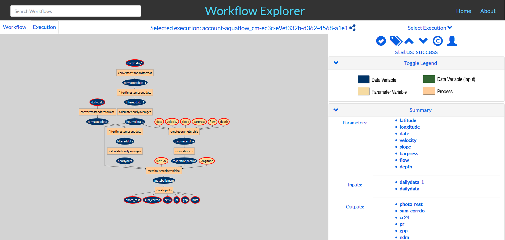

Workflow Explorer (WExp) is a simple application that helps explore the contents of a repository containing templates and executions represented in OPMW. The image below shows an overview of the tool:
WExp allows looking for workflows and their respective executions, download their different codes, inputs or outputs and explore their metadata to obtain more information.
A beta version of the Workflow explorer can be seen by clicking the following link